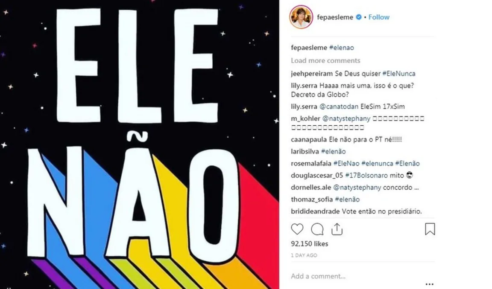

Uses your browser’s speech voice.
COUNTRY COLLECTION · BRAZIL
Brazil: memes, WhatsApp, and the 2018 election
Browse entries on Bolsonaro-supporting WhatsApp imagery, the #EleNão and #EleSim slogans, and the Bolsomito video game.
← Back to BrazilENTRIES
Explore the themes
Each entry introduces the memes, describes their origins and history, and presents related images and sources.

ENTRY
Bolsonaro on WhatsApp: the Uncle Sam meme
A recruitment-poster template recast as a patriotic call to political participation.
Read entry ↗
ENTRY
#EleNão and #EleSim
Opposition, counter-mobilisation, hashtags, and competing political identities.
Read entry ↗
ENTRY
Bolsomito: the supporter-made video game
Campaign conflict translated into a playable hero-versus-enemy narrative.
Read entry ↗